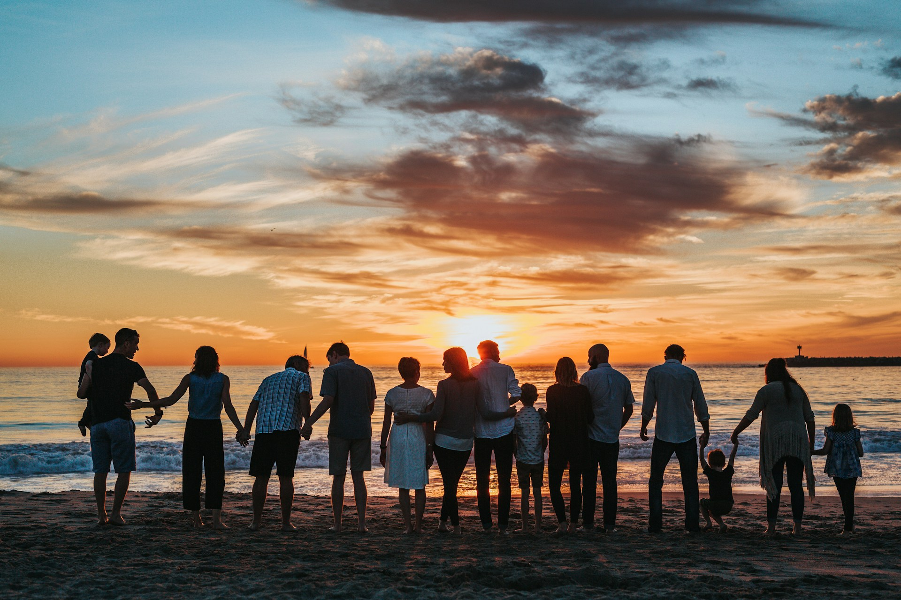
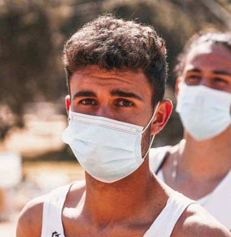
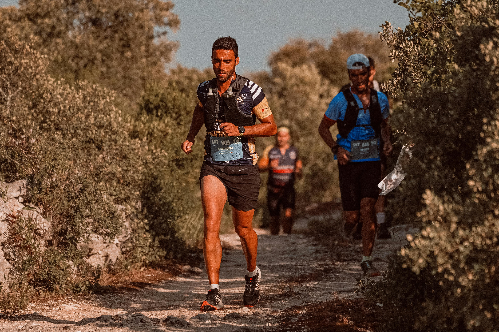
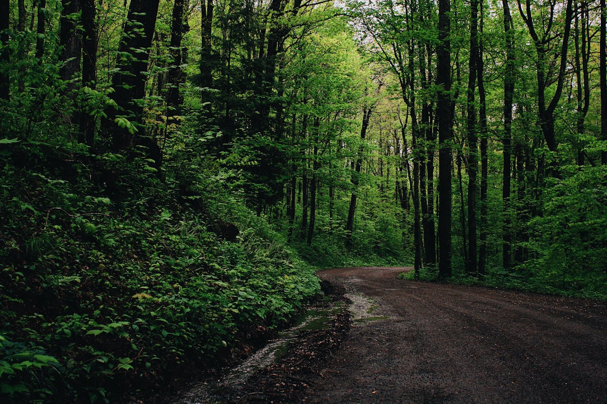

I am a trail runner and travel enthusiast who loves exploring new terrains and cultures. From the forests of the Pacific Northwest to the peaks of the Swiss Alps, I have a passion for adventure and endurance. Follow along for tips, inspiration, and stories from my trials to my trails!
304 Followers
Your recent posts

